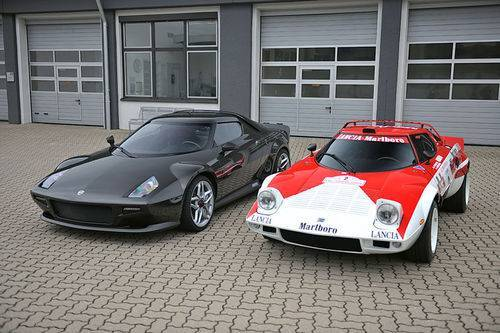
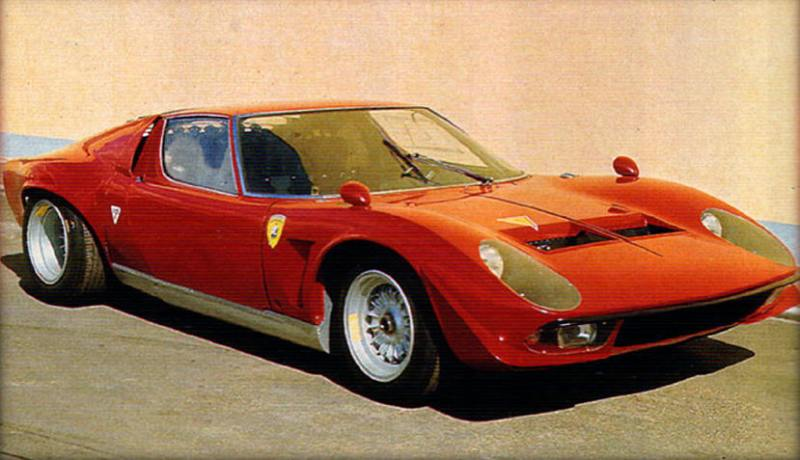
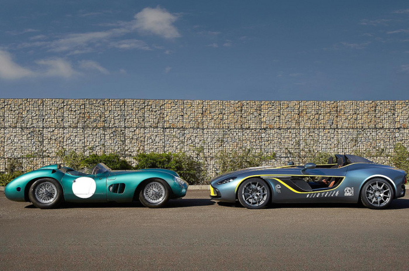

Mercedes 2009
Force fed by a pair of turbochargers, the S58 is fitted with
a forged crankshaft and a DOHC 24-valve head featuring variable
intake- and exhaust-valve timing and variable intake-valve lift.
It sends its torque through a ZF-supplied eight-speed automatic
transmission that shifts so quickly, you won't miss a dual-clutch
box (but perhaps a manual). According to BMW, zero to 60 mph happens
in 4.0 seconds for the Competition (add a tenth for the regular X3 M and X4 M),
and top speed is governed at 155 mph but can be raised to 174 mph on the regular
models and 177 mph on the Competition models. Official EPA fuel-economy estimates
are still pending, but BMW M promises very reasonable figures.
Pero no solo depende del motor igualar las casi dos toneladas de peso.
La otra mitad del trabajo corresponde
al chasis y la suspensión, que han sido mejorados
significativamente de los modelos M40i
NUEVO LANCIA STRATOS

Este modelo, llegado de la estratosfera, fue diseñado por Bertone para la marca
italiana Lancia con el propósito de competir en el Campeonato del Mundo de Rallyes.
Desde su presentación en el
salón de Turín de 1970, fue objeto de admiración por los apasionados del automovilismo
LAMBORGHINI MIURA

Tanto Dallara como Stanzani procedían de Ferrari, donde a diferencia de la marca del toro
la competición era más que una seña de identidad, era una filosofía.
El trío responsable del Miura; Gian Paolo Dallara, Paolo Stanzani y Bob Wallace, creará después
el Espada, de nuevo con el trabajo de Marcello Gandini en lo concerniente al diseño.
ASTON MARTIN CC100. LA ESENCIA DE 100 AÑOS DE HISTORIA

Aston Martin se ha ganado su prestigio a lo largo de un siglo. Hoy es sinónimo de elegancia,
confort, elitismo, pero también deportividad y velocidad. En el centenario de su fundación,
han elegido como musa al más destacado exponente de la historia en la competición de la marca
británica para homenajearse a sí mismos.